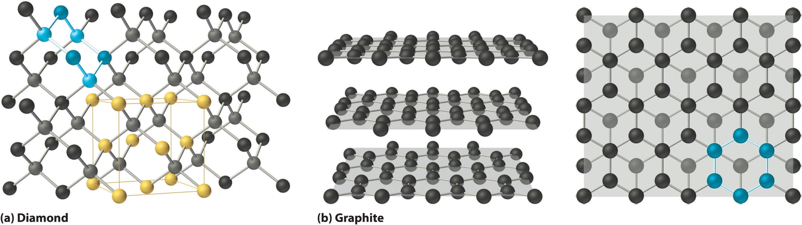
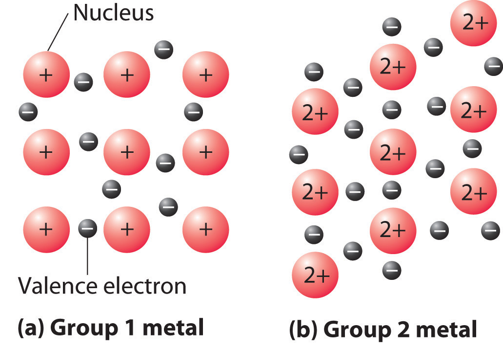

Based on the nature of the forces that hold the component atoms, molecules, or ions together, solids may be formally classified as ionic, molecular, covalent (network), or metallic. The variation in the relative strengths of these four types of interactions correlates nicely with their wide variation in properties.
You learned in Chapter 8 "Ionic versus Covalent Bonding" that an ionic solidA solid that consists of positively and negatively charged ions held together by electrostatic forces. consists of positively and negatively charged ions held together by electrostatic forces. (For more information about ionic solids, see Chapter 8 "Ionic versus Covalent Bonding", Section 8.2 "Ionic Bonding".) The strength of the attractive forces depends on the charge and size of the ions that compose the lattice and determines many of the physical properties of the crystal.
The lattice energy, the energy required to separate 1 mol of a crystalline ionic solid into its component ions in the gas phase, is directly proportional to the product of the ionic charges and inversely proportional to the sum of the radii of the ions. For example, NaF and CaO both crystallize in the face-centered cubic (fcc) sodium chloride structure, and the sizes of their component ions are about the same: Na+ (102 pm) versus Ca2+ (100 pm), and F− (133 pm) versus O2− (140 pm). Because of the higher charge on the ions in CaO, however, the lattice energy of CaO is almost four times greater than that of NaF (3401 kJ/mol versus 923 kJ/mol). The forces that hold Ca and O together in CaO are much stronger than those that hold Na and F together in NaF, so the heat of fusion of CaO is almost twice that of NaF (59 kJ/mol versus 33.4 kJ/mol), and the melting point of CaO is 2927°C versus 996°C for NaF. In both cases, however, the values are large; that is, simple ionic compounds have high melting points and are relatively hard (and brittle) solids.
Molecular solidsA solid that consists of molecules held together by relatively weak forces, such as dipole-dipole interactions, hydrogen bonds, and London dispersion forces. consist of atoms or molecules held to each other by dipole–dipole interactions, London dispersion forces, or hydrogen bonds, or any combination of these, which were discussed in Chapter 11 "Liquids". The arrangement of the molecules in solid benzene is as follows:
The structure of solid benzene. In solid benzene, the molecules are not arranged with their planes parallel to one another but at 90° angles.
Because the intermolecular interactions in a molecular solid are relatively weak compared with ionic and covalent bonds, molecular solids tend to be soft, low melting, and easily vaporized (ΔHfus and ΔHvap are low). For similar substances, the strength of the London dispersion forces increases smoothly with increasing molecular mass. For example, the melting points of benzene (C6H6), naphthalene (C10H8), and anthracene (C14H10), with one, two, and three fused aromatic rings, are 5.5°C, 80.2°C, and 215°C, respectively. The enthalpies of fusion also increase smoothly within the series: benzene (9.95 kJ/mol) < naphthalene (19.1 kJ/mol) < anthracene (28.8 kJ/mol). If the molecules have shapes that cannot pack together efficiently in the crystal, however, then the melting points and the enthalpies of fusion tend to be unexpectedly low because the molecules are unable to arrange themselves to optimize intermolecular interactions. Thus toluene (C6H5CH3) and m-xylene [m-C6H4(CH3)2] have melting points of −95°C and −48°C, respectively, which are significantly lower than the melting point of the lighter but more symmetrical analog, benzene.
Self-healing rubber is an example of a molecular solid with the potential for significant commercial applications. The material can stretch, but when snapped into pieces it can bond back together again through reestablishment of its hydrogen-bonding network without showing any sign of weakness. Among other applications, it is being studied for its use in adhesives and bicycle tires that will self-heal.
Toluene and m-xylene. The methyl groups attached to the phenyl ring in toluene and m-xylene prevent the rings from packing together as in solid benzene.
Covalent solidsA solid that consists of two- or three-dimensional networks of atoms held together by covalent bonds. are formed by networks or chains of atoms or molecules held together by covalent bonds. A perfect single crystal of a covalent solid is therefore a single giant molecule. For example, the structure of diamond, shown in part (a) in Figure 12.19 "The Structures of Diamond and Graphite", consists of sp3 hybridized carbon atoms, each bonded to four other carbon atoms in a tetrahedral array to create a giant network. The carbon atoms form six-membered rings.
Figure 12.19 The Structures of Diamond and Graphite
(a) Diamond consists of sp3 hybridized carbon atoms, each bonded to four other carbon atoms. The tetrahedral array forms a giant network in which carbon atoms form six-membered rings. (b) These side (left) and top (right) views of the graphite structure show the layers of fused six-membered rings and the arrangement of atoms in alternate layers of graphite. The rings in alternate layers are staggered, such that every other carbon atom in one layer lies directly under (and above) the center of a six-membered ring in an adjacent layer.
The unit cell of diamond can be described as an fcc array of carbon atoms with four additional carbon atoms inserted into four of the tetrahedral holes. It thus has the zinc blende structure described in Section 12.3 "Structures of Simple Binary Compounds", except that in zinc blende the atoms that compose the fcc array are sulfur and the atoms in the tetrahedral holes are zinc. Elemental silicon has the same structure, as does silicon carbide (SiC), which has alternating C and Si atoms. The structure of crystalline quartz (SiO2), shown in Section 12.1 "Crystalline and Amorphous Solids", can be viewed as being derived from the structure of silicon by inserting an oxygen atom between each pair of silicon atoms.
All compounds with the diamond and related structures are hard, high-melting-point solids that are not easily deformed. Instead, they tend to shatter when subjected to large stresses, and they usually do not conduct electricity very well. In fact, diamond (melting point = 3500°C at 63.5 atm) is one of the hardest substances known, and silicon carbide (melting point = 2986°C) is used commercially as an abrasive in sandpaper and grinding wheels. It is difficult to deform or melt these and related compounds because strong covalent (C–C or Si–Si) or polar covalent (Si–C or Si–O) bonds must be broken, which requires a large input of energy.
Other covalent solids have very different structures. For example, graphite, the other common allotrope of carbon, has the structure shown in part (b) in Figure 12.19 "The Structures of Diamond and Graphite". It contains planar networks of six-membered rings of sp2 hybridized carbon atoms in which each carbon is bonded to three others. This leaves a single electron in an unhybridized 2pz orbital that can be used to form C=C double bonds, resulting in a ring with alternating double and single bonds. Because of its resonance structures, the bonding in graphite is best viewed as consisting of a network of C–C single bonds with one-third of a π bond holding the carbons together, similar to the bonding in benzene.
To completely describe the bonding in graphite, we need a molecular orbital approach similar to the one used for benzene in Chapter 9 "Molecular Geometry and Covalent Bonding Models". In fact, the C–C distance in graphite (141.5 pm) is slightly longer than the distance in benzene (139.5 pm), consistent with a net carbon–carbon bond order of 1.33. In graphite, the two-dimensional planes of carbon atoms are stacked to form a three-dimensional solid; only London dispersion forces hold the layers together. As a result, graphite exhibits properties typical of both covalent and molecular solids. Due to strong covalent bonding within the layers, graphite has a very high melting point, as expected for a covalent solid (it actually sublimes at about 3915°C). It is also very soft; the layers can easily slide past one another because of the weak interlayer interactions. Consequently, graphite is used as a lubricant and as the “lead” in pencils; the friction between graphite and a piece of paper is sufficient to leave a thin layer of carbon on the paper. Graphite is unusual among covalent solids in that its electrical conductivity is very high parallel to the planes of carbon atoms because of delocalized C–C π bonding. Finally, graphite is black because it contains an immense number of alternating double bonds, which results in a very small energy difference between the individual molecular orbitals. Thus light of virtually all wavelengths is absorbed. Diamond, on the other hand, is colorless when pure because it has no delocalized electrons.
Table 12.5 "A Comparison of Intermolecular (Δ" compares the strengths of the intermolecular and intramolecular interactions for three covalent solids, showing the comparative weakness of the interlayer interactions.
Table 12.5 A Comparison of Intermolecular (ΔHsub) and Intramolecular Interactions
| Substance | ΔHsub (kJ/mol) | Average Bond Energy (kJ/mol) |
|---|---|---|
| phosphorus (s) | 58.98 | 201 |
| sulfur (s) | 64.22 | 226 |
| iodine (s) | 62.42 | 149 |
Metals are characterized by their ability to reflect light, called lusterThe ability to reflect light. Metals, for instance, have a shiny surface that reflects light (metals are lustrous), whereas nonmetals do not., their high electrical and thermal conductivity, their high heat capacity, and their malleability and ductility. Every lattice point in a pure metallic element is occupied by an atom of the same metal. The packing efficiency in metallic crystals tends to be high, so the resulting metallic solidsA solid that consists of metal atoms held together by metallic bonds. are dense, with each atom having as many as 12 nearest neighbors.
Bonding in metallic solids is quite different from the bonding in the other kinds of solids we have discussed. Because all the atoms are the same, there can be no ionic bonding, yet metals always contain too few electrons or valence orbitals to form covalent bonds with each of their neighbors. Instead, the valence electrons are delocalized throughout the crystal, providing a strong cohesive force that holds the metal atoms together.
Valence electrons in a metallic solid are delocalized, providing a strong cohesive force that holds the atoms together.
The strength of metallic bonds varies dramatically. For example, cesium melts at 28.4°C, and mercury is a liquid at room temperature, whereas tungsten melts at 3680°C. Metallic bonds tend to be weakest for elements that have nearly empty (as in Cs) or nearly full (Hg) valence subshells, and strongest for elements with approximately half-filled valence shells (as in W). As a result, the melting points of the metals increase to a maximum around group 6 and then decrease again from left to right across the d block. Other properties related to the strength of metallic bonds, such as enthalpies of fusion, boiling points, and hardness, have similar periodic trends.
A somewhat oversimplified way to describe the bonding in a metallic crystal is to depict the crystal as consisting of positively charged nuclei in an electron seaValence electrons that are delocalized throughout a metallic solid. (Figure 12.20 "The Electron-Sea Model of Bonding in Metals"). In this model, the valence electrons are not tightly bound to any one atom but are distributed uniformly throughout the structure. Very little energy is needed to remove electrons from a solid metal because they are not bound to a single nucleus. When an electrical potential is applied, the electrons can migrate through the solid toward the positive electrode, thus producing high electrical conductivity. The ease with which metals can be deformed under pressure is attributed to the ability of the metal ions to change positions within the electron sea without breaking any specific bonds. The transfer of energy through the solid by successive collisions between the metal ions also explains the high thermal conductivity of metals. This model does not, however, explain many of the other properties of metals, such as their metallic luster and the observed trends in bond strength as reflected in melting points or enthalpies of fusion. A more complete description of metallic bonding is presented in Section 12.6 "Bonding in Metals and Semiconductors".
Figure 12.20 The Electron-Sea Model of Bonding in Metals
Fixed, positively charged metal nuclei from group 1 (a) or group 2 (b) are surrounded by a “sea” of mobile valence electrons. Because a group 2 metal has twice the number of valence electrons as a group 1 metal, it should have a higher melting point.
An alloyA solid solution of two or more metals whose properties differ from those of the constituent elements. is a mixture of metals with metallic properties that differ from those of its constituent elements. Brass (Cu and Zn in a 2:1 ratio) and bronze (Cu and Sn in a 4:1 ratio) are examples of substitutional alloysAn alloy formed by the substitution of one metal atom for another of similar size in the lattice., which are metallic solids with large numbers of substitutional impurities. In contrast, small numbers of interstitial impurities, such as carbon in the iron lattice of steel, give an interstitial alloyAn alloy formed by inserting smaller atoms into holes in the metal lattice.. Because scientists can combine two or more metals in varying proportions to tailor the properties of a material for particular applications, most of the metallic substances we encounter are actually alloys. Examples include the low-melting-point alloys used in solder (Pb and Sn in a 2:1 ratio) and in fuses and fire sprinklers (Bi, Pb, Sn, and Cd in a 4:2:1:1 ratio).
The compositions of most alloys can vary over wide ranges. In contrast, intermetallic compoundsAn alloy that consists of certain metals that combine in only specific proportions and whose properties are frequently quite different from those of their constituent elements. consist of certain metals that combine in only specific proportions. Their compositions are largely determined by the relative sizes of their component atoms and the ratio of the total number of valence electrons to the number of atoms present (the valence electron density). The structures and physical properties of intermetallic compounds are frequently quite different from those of their constituent elements, but they may be similar to elements with a similar valence electron density. For example, Cr3Pt is an intermetallic compound used to coat razor blades advertised as “platinum coated”; it is very hard and dramatically lengthens the useful life of the razor blade. With similar valence electron densities, Cu and PdZn have been found to be virtually identical in their catalytic properties.
Some general properties of the four major classes of solids are summarized in Table 12.6 "Properties of the Major Classes of Solids".
Table 12.6 Properties of the Major Classes of Solids
| Ionic Solids | Molecular Solids | Covalent Solids | Metallic Solids |
|---|---|---|---|
| poor conductors of heat and electricity | poor conductors of heat and electricity | poor conductors of heat and electricity* | good conductors of heat and electricity |
| relatively high melting point | low melting point | high melting point | melting points depend strongly on electron configuration |
| hard but brittle; shatter under stress | soft | very hard and brittle | easily deformed under stress; ductile and malleable |
| relatively dense | low density | low density | usually high density |
| dull surface | dull surface | dull surface | lustrous |
| *Many exceptions exist. For example, graphite has a relatively high electrical conductivity within the carbon planes, and diamond has the highest thermal conductivity of any known substance. | |||
The general order of increasing strength of interactions in a solid is molecular solids < ionic solids ≈ metallic solids < covalent solids.
Classify Ge, RbI, C6(CH3)6, and Zn as ionic, molecular, covalent, or metallic solids and arrange them in order of increasing melting points.
Given: compounds
Asked for: classification and order of melting points
Strategy:
A Locate the component element(s) in the periodic table. Based on their positions, predict whether each solid is ionic, molecular, covalent, or metallic.
B Arrange the solids in order of increasing melting points based on your classification, beginning with molecular solids.
Solution:
A Germanium lies in the p block just under Si, along the diagonal line of semimetallic elements, which suggests that elemental Ge is likely to have the same structure as Si (the diamond structure). Thus Ge is probably a covalent solid. RbI contains a metal from group 1 and a nonmetal from group 17, so it is an ionic solid containing Rb+ and I− ions. The compound C6(CH3)6 is a hydrocarbon (hexamethylbenzene), which consists of isolated molecules that stack to form a molecular solid with no covalent bonds between them. Zn is a d-block element, so it is a metallic solid.
B Arranging these substances in order of increasing melting points is straightforward, with one exception. We expect C6(CH3)6 to have the lowest melting point and Ge to have the highest melting point, with RbI somewhere in between. The melting points of metals, however, are difficult to predict based on the models presented thus far. Because Zn has a filled valence shell, it should not have a particularly high melting point, so a reasonable guess is C6(CH3)6 < Zn ~ RbI < Ge. The actual melting points are C6(CH3)6, 166°C; Zn, 419°C; RbI, 642°C; and Ge, 938°C. This agrees with our prediction.
Exercise
Classify C60, BaBr2, GaAs, and AgZn as ionic, covalent, molecular, or metallic solids and then arrange them in order of increasing melting points.
Answer: C60 (molecular) < AgZn (metallic) ~ BaBr2 (ionic) < GaAs (covalent). The actual melting points are C60, about 300°C; AgZn, about 700°C; BaBr2, 856°C; and GaAs, 1238°C.
The major types of solids are ionic, molecular, covalent, and metallic. Ionic solids consist of positively and negatively charged ions held together by electrostatic forces; the strength of the bonding is reflected in the lattice energy. Ionic solids tend to have high melting points and are rather hard. Molecular solids are held together by relatively weak forces, such as dipole–dipole interactions, hydrogen bonds, and London dispersion forces. As a result, they tend to be rather soft and have low melting points, which depend on their molecular structure. Covalent solids consist of two- or three-dimensional networks of atoms held together by covalent bonds; they tend to be very hard and have high melting points. Metallic solids have unusual properties: in addition to having high thermal and electrical conductivity and being malleable and ductile, they exhibit luster, a shiny surface that reflects light. An alloy is a mixture of metals that has bulk metallic properties different from those of its constituent elements. Alloys can be formed by substituting one metal atom for another of similar size in the lattice (substitutional alloys), by inserting smaller atoms into holes in the metal lattice (interstitial alloys), or by a combination of both. Although the elemental composition of most alloys can vary over wide ranges, certain metals combine in only fixed proportions to form intermetallic compounds with unique properties.
Four vials labeled A–D contain sucrose, zinc, quartz, and sodium chloride, although not necessarily in that order. The following table summarizes the results of the series of analyses you have performed on the contents:
| A | B | C | D | |
|---|---|---|---|---|
| Melting Point | high | high | high | low |
| Thermal Conductivity | poor | poor | good | poor |
| Electrical Conductivity in Solid State | moderate | poor | high | poor |
| Electrical Conductivity in Liquid State | high | poor | high | poor |
| Hardness | hard | hard | soft | soft |
| Luster | none | none | high | none |
Match each vial with its contents.
Do ionic solids generally have higher or lower melting points than molecular solids? Why? Do ionic solids generally have higher or lower melting points than covalent solids? Explain your reasoning.
The strength of London dispersion forces in molecular solids tends to increase with molecular mass, causing a smooth increase in melting points. Some molecular solids, however, have significantly lower melting points than predicted by their molecular masses. Why?
Suppose you want to synthesize a solid that is both heat resistant and a good electrical conductor. What specific types of bonding and molecular interactions would you want in your starting materials?
Explain the differences between an interstitial alloy and a substitutional alloy. Given an alloy in which the identity of one metallic element is known, how could you determine whether it is a substitutional alloy or an interstitial alloy?
How are intermetallic compounds different from interstitial alloys or substitutional alloys?
In a substitutional alloy, the impurity atoms are similar in size and chemical properties to the atoms of the host lattice; consequently, they simply replace some of the metal atoms in the normal lattice and do not greatly perturb the structure and physical properties. In an interstitial alloy, the impurity atoms are generally much smaller, have very different chemical properties, and occupy holes between the larger metal atoms. Because interstitial impurities form covalent bonds to the metal atoms in the host lattice, they tend to have a large effect on the mechanical properties of the metal, making it harder, less ductile, and more brittle. Comparing the mechanical properties of an alloy with those of the parent metal could be used to decide whether the alloy were a substitutional or interstitial alloy.
Will the melting point of lanthanum(III) oxide be higher or lower than that of ferrous bromide? The relevant ionic radii are as follows: La3+, 104 pm; O2−, 132 pm; Fe2+, 83 pm; and Br−, 196 pm. Explain your reasoning.
Draw a graph showing the relationship between the electrical conductivity of metallic silver and temperature.
Which has the higher melting point? Explain your reasoning in each case.
Draw a graph showing the relationship between the electrical conductivity of a typical semiconductor and temperature.